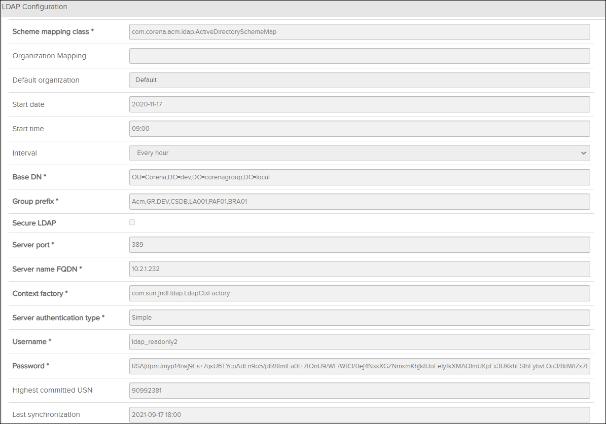

This procedure explains how to add or modify LDAP configuration settings in Access Control Manager so that you can
synchronize users and groups from the LDAP server to Access Control Manager.
Note: If LDAP shall be used for managing users, make sure that the LDAP option is
selected in the Authentication Provider Configuration
page.
-
Click the
 Configuration
icon on the
header
bar
to open the Configuration
page.
Configuration
icon on the
header
bar
to open the Configuration
page.
-
In the left menu, click
LDAP
Configuration.
The
LDAP Configuration
pane
appears:

LDAP
Configuration
Pane
Note: If the form is empty it means that there is no
ldapconfig.properties file in the servers config dir. When saving the form,
you will create this file automatically.
-
Click the
 button to enable editing.
button to enable editing.
-
Fill in the required information, as described in Table 2. Required
fields appear with bold letters, asterisk and a red border.
-
Click the
 button to save the configuration.
button to save the configuration.
-
If not already done, open the Authentication Provider
Configuration page select the LDAP option to activate the SAML
configuration.
-
If you want to manually start the synchronization, click the button
in the LDAP Configuration page.
A "Synchronize Requested" message appears in the bottom left corner of
the window. Users and user groups are now copied from the LDAP Server to
Flatirons -
Access Control Manager. When the
operation is completed you will see a "Synchronize Completed" message. Verify
that the synchronization job was successful by checking the content in
Users and
User
Groups.
Note: To
trigger a full synchronization when using AD you need to reset the USN to
0.
-
The Secure LDAP option will turn on encrypted communication between ACM and the
chosen LDAP server. This requires the configuration of a certificate. For more
details, refer to the "Configuring Secure LDAP in ACM" and "Configuring
Secure LDAP in OpenLDAP Server" sections of the Flatirons Access
Control Installation Guide.